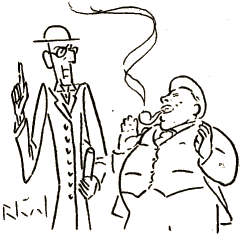
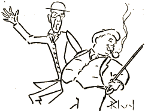

Du amikoj tre intimaj
Jam de jaroj pli ol dek
― (Kvankam mense ne proksimaj) ―
Estas Brumm kaj Pipenbek.
Brumm severmiene partas
La sekecon de skelet'
Kaj pofunte li eksportas
Piajn pensojn de asket'.
Pipenbek dikega estas
Pekemulo kun cinik';
Nur barakte li digestas
La predikojn de l' amik'.
Tial ambaŭ sin renkontas
Kiel fajro kaj glaci',
Kaj porpruve mi rakontas
Pecojn de l' konversaci' ...
* * *
Iun tagon, senavize
Ĉe l' amiko venis Brumm,
Kaj li trovis lin surprize
Dum senhonta amindum':
Tie Pipenbek prezidis
Al intima idili',
Tie virineto sidis
Sur la sofo apud li.
Tiam Brumm pri l' katastrofo
Blekis per tremanta voĉ':
„ Ve ! ― Sur sia propra sofo
Li sin donas al diboĉ'! “
„ He pardonu “, furioze
Pipenbek nun grakis pli,
„ Ni ĵus studis serioze
Iom da filozofi'.
Se vi estus filozofo
El la skol' de l' realism',
Vi komprenus, ke la sofo
Estas bazo de l' ... Sofism'! “
Brumm ĉikane reparolas:
„ Tio ŝajnas stranga stud',
Vi kaj ŝi ekscite bolas
Kiel par' dum am-prelud' ... “
Pipenbek responde bruas,
Ke per seka teori'
Ni ne tiom nin instruas,
Kiom per alegori'.
„ Nun komprenu, apostolo,
Ke ni bolis tie ĉi,
Nur ĉar ĉiu ... para bolo
Estas mem alegori'! “
* * *
Iun tagon Brumm promenis
Tute sola tra l' arbar',
Kiam jen renkonte venis
Sur la vojo iu par' ...
Kaj indigne Brumm rekonis
La amikon Pipenbek,
Kiu kun virin' friponis
Sur la lim' de l' Sesa Pek'.
Sed tuj Pipenbek frivola
Ŝiris sin el la brakum',
Lasis la virinon sola
Kaj alkuris nun al Brumm:
„ Ho karega, ĝis ĉi tie
Vin kondukis bona vent'! “
Brumm respondis ironie:
„ Dankon pro la kompliment'.
Sed mi vidas ke mi ĝenis
Vin dum ĉarma rendevu',
Ĉar jam antaŭ ol mi venis,
Ŝajnas, ke vi estis du! “
„ Tro severe vi mezuras “,
Pipenbek ekskuzis sin,
„ Mi sincere al vi ĵuras,
Ke mi eĉ ne konas ŝin.
Estu certa, ke resume
Mi ne estas tia brut',
Nur ... apenaŭ palpebrume
Mi respondis al salut'. “
„ Jes, sendube, ― palpebrume “,
Brumm konkludis, ― „ bone, sed
... Palpe multe pli ol... Brumm'e,
Tio estas mia kred'! “
* * *
Iun tagon, frumatene
Ambaŭ marŝis tra la land',
Kiam sinjorin' senĝene
... „ Strange sidis “ ĉe l' vojrand' ...
Pipenbek ĉi tiun bildon
Tuj absorbis kun avid';
Brumm permane faris ŝildon
Por protekti sin de l' vid',
Kaj por kapti bonintence
La atenton de l' amik'
Brumm parolis nun sentence
Pri l' vetero kun taktik':
„ Bela tago, mia kara,
Vere dolĉa majmaten',
Majmateno senkompara
Por ekskurso kaj promen' ... “

Pipenbek konsentis plene
Kaj respondis kun komplez':
„ Jes, hodiaŭ frumatene
Estas ... bela postaĵmez'! “